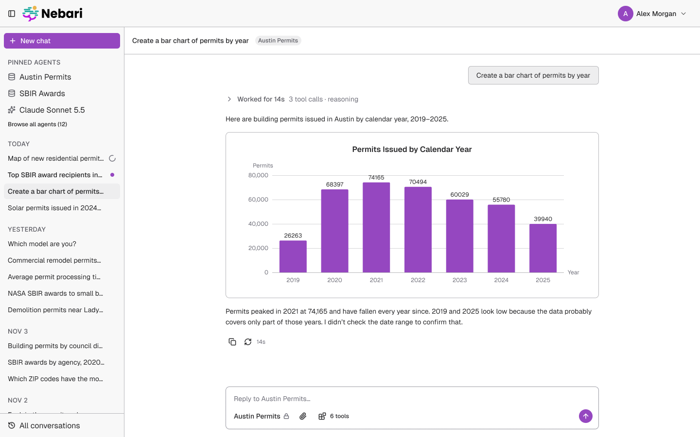
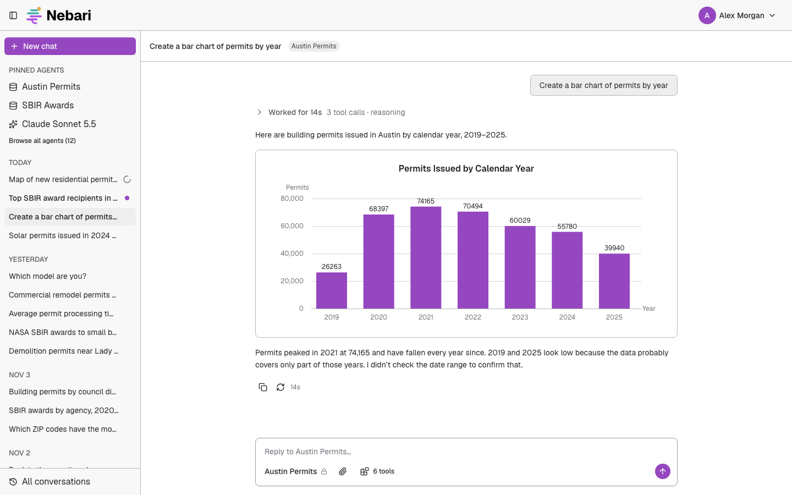
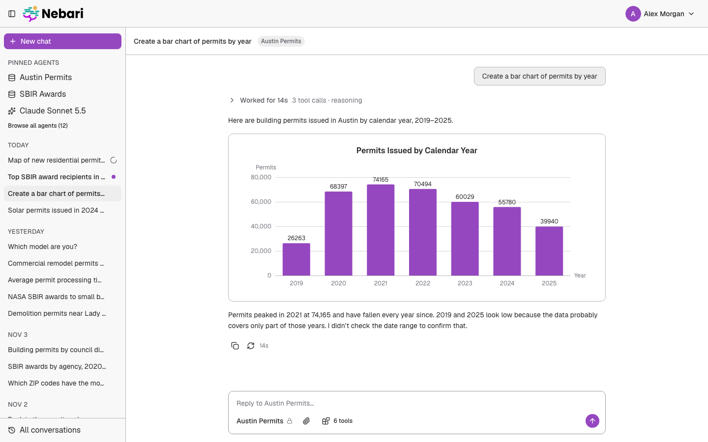

Tech share · Nebari design
Can a skill replace a design system?
I built the same Nebari screens two ways with Claude. The quality came out even. The skill cost twice the tokens.
← → to move, N for speaker notes.
The two approaches
Both start from stock shadcn. What differs is who restyles it, and when.
the registry
Engineers restyle once
- Nebari design ships as a shadcn registry.
- Engineers restyled shadcn to the design and released it.
- The agent installs finished components.
a skill and the Figma file
The agent restyles in each app
- No Nebari component code to install.
- A skill, kit-ui, installs stock shadcn components.
- It reads the Figma file and restyles them to match.
The idea: shadcn brings the behavior. The Figma file decides the look. No component library to build first.
The test
Same screens, same prompt, same model. A script and a blind reviewer judged.
build
Four chat screens
From a real Nebari design. The two prompts differ only in which design system to use.
judge
A script
Accessibility checks, keyboard behavior, sideways scrolling, and a production build.
fidelity
A blind reviewer
Compares each build with the design and lists what a person would notice.
What I got wrong first: I measured fidelity by counting pixels. A one-pixel shift nobody can see scored worse than a wrong color.
The result
Same quality. Twice the tokens.
2.0×
the tokens to build the same four screens with the skill, and three times as long.
| Average per build | Registry | Skill |
|---|---|---|
| Differences you would notice | 1.7 | 1.3 |
| Accessibility defects | 0 | 0 |
| Tokens | 186,410 | 379,610 |
| Build time | 6m 30s | 19m 25s |
The screens
Design, skill and registry, side by side.



The first build of each. Click a screenshot to open it full size.
Where I land
Keep the registry where we have one. Start new UIs with the skill.
registry
For Nebari, it stays
- Half the tokens and a third of the time per build.
- It carries extras a designer does not draw, like loading states.
- Every app gets the same components.
skill
For something new, start here
- It matched the registry with no library to build first.
- A design change is a restyle, not a release.
- Move to a registry when a second app needs the same parts.